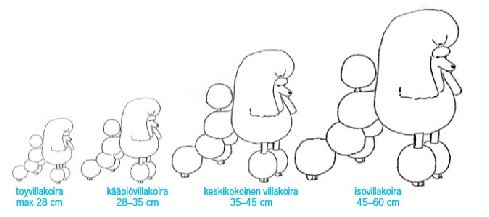

KOOT JA VÄRIT
Villakoirarotuja on neljä: toyvillakoira, kääpiövillakoira, keskikokoinen villakoira sekä isovillakoira.
Villakoira on yksivärinen ja värit ovat musta, valkoinen, ruskea, aprikoosi, punainen ja harmaa.

Kokotaulukko
| Paino (kg) | Säkäkorkeus (cm) | |
|---|---|---|
| Toyvillakoira | 3 - 4 | 23 - 28 |
| Kääpiövillakoira | 4 - 5 | 28 - 35 |
| Keskikokoinen villakoira | 8 - 10 | 35 - 45 |
| Isovillakoira | 20 - 25 | 45 - 62 |
Avaintietoja
| Alkuperämaa | Ranska |
|---|---|
| Määrä Suomessa | 31374 |
| Elinikä | n. 10 - 14 vuotta |
| Alkuperäinen käyttö | lintukoira |
| Nykyinen käyttö | seurakoira |
VILLAKOIRA ON…
Luonteeltaan iloinen ja vilkas. Se nauttii keskipisteenä olemisesta. Lisäksi villakoira on miellyttämisenhaluinen ja oppimiskykyinen. Villakoira pitää toiminnasta ja se sopii monipuoliseen harrastustoimintaan.
Lähteet:
Suomen villakoirakerhoWikipedia